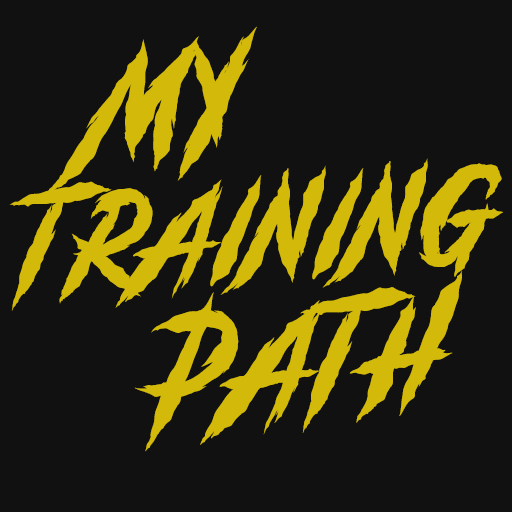

Entrena, come y supérate
Entrenamiento, nutrición y progreso en una sola app: organiza tus días, controla tus macros y sube de rango con tus amigos.
Funciones
Organiza tus entrenos
Crea tus días con más de 870 ejercicios con foto y paso a paso, o añade los tuyos, con series, repeticiones y descanso.
Modo entreno
Sigue el entreno ejercicio a ejercicio, marca cada serie y usa el temporizador de descanso.
Nutrición a tu medida
Calcula tu IMC, metabolismo, gasto diario, agua y macros según tu objetivo.
Diario de comidas
Busca alimentos, incluso sin conexión, escanea el código de barras y reparte tus macros en 4 comidas.
Progreso y récords
Registra kilos, repeticiones y RIR, con gráficas de peso, 1RM estimado y volumen.
Rangos y amigos
Sube de rango con cada kilo levantado, compara rangos y rachas, y mira quién está entrenando.
Preguntas frecuentes
¿Necesito una cuenta?
Sí: tus entrenos, comidas y progreso se guardan en tu cuenta para que no los pierdas. Puedes entrar con correo o con Google.
¿Cómo borro mi cuenta?
Desde Ajustes en la app, o siguiendo estas instrucciones.
¿Qué incluye la suscripción?
Quita los anuncios, incluye las estadísticas avanzadas y rellena tus comidas automáticamente según tus macros.
¿De dónde salen los datos de los alimentos?
De Open Food Facts, con licencia ODbL. Puedes descargar la copia que incluye la app.
¿Otra duda o sugerencia? Escribe a irongamez2001@gmail.com.